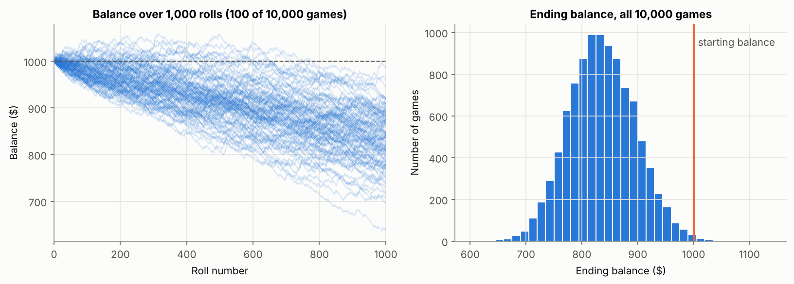
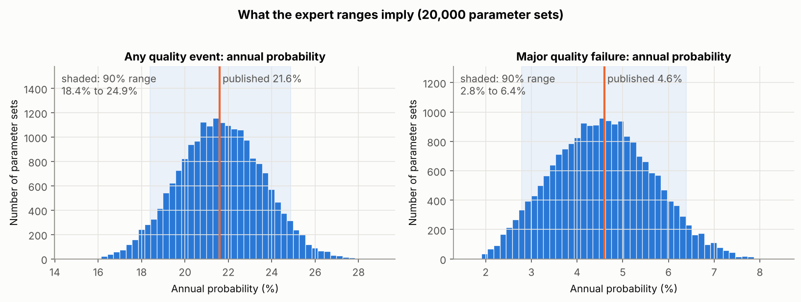
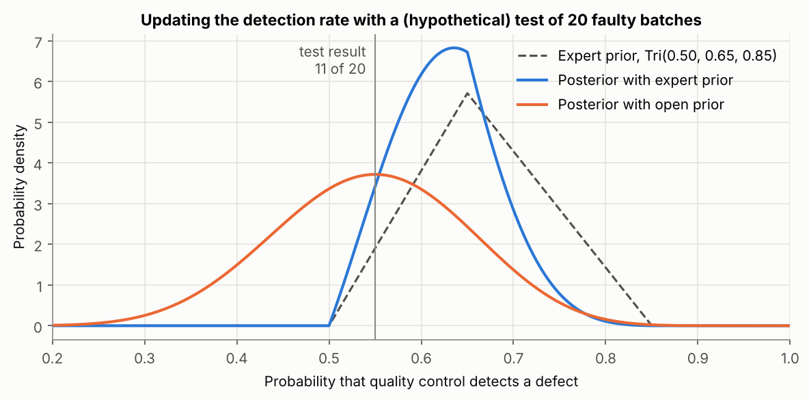

Unit 7: An Introduction to the Concepts of Quantitative Risk Modelling
This unit introduces quantitative risk modelling. It reviews probabilistic approaches such as Monte Carlo simulation and methods based on Bayes’ theorem, and multi-criteria decision-making techniques such as TOPSIS, AHP and ANP, together with the principles and antipatterns of each and how to choose between them. The two risk modelling activities, a Monte Carlo simulation in Python and the first two chapters of Think Bayes, are stored below as artefacts, together with a review of the quantitative model in my Pampered Pets executive summary that applies both methods.
Reflection
Structured using the What? So what? Now what? model (Rolfe, Freshwater and Jasper, 2001).
What?
Unit 7 moved from qualitative scales to quantitative risk modelling. The lecturecast set out the two broad families of method, probabilistic models such as Monte Carlo simulation and Bayesian approaches, and multi-criteria decision-making (MCDM) techniques such as TOPSIS, AHP and ANP, and when each should be used. The required reading was Metropolis’s (1987) account of how the Monte Carlo method began, Asadabadi, Chang and Saberi’s (2019) critique of AHP and ANP, and Hargreaves’s (2021) chapter on quantitative risk assessment in enterprise risk management (ERM). I also read Wunder et al.’s (2024) study of CVSS scoring, the first two chapters of Downey’s (2021) Think Bayes and Aven and Thekdi’s (2025) chapter on risk perception. For the risk modelling activities I rebuilt Fizell’s (2022) Monte Carlo dice game in Python and worked through the chapter 1 and 2 exercises in Think Bayes. I then turned both methods on the quantitative model in my own executive summary for Pampered Pets (Stevens, 2026). The three notebooks are the artefacts below.
So what?
Metropolis (1987) describes a method born of necessity. Fermi had used statistical sampling in Rome in the 1930s to predict the results of neutron experiments, without ever publishing it. The idea returned after the war, when Ulam realised that the new electronic computers could revive statistical sampling and von Neumann worked out how ENIAC could trace the histories of individual neutrons. What I took from this is that Monte Carlo is a tool for problems with no workable formula. Fizell’s dice game is not one of them. Six of the 36 outcomes win, so the win probability is 1/6 and the expected ending balance is $833.33, and both can be written down before rolling ten million dice. My simulation matched them (0.1667 and $833.75). The exact check was still worth doing, because it found what the tutorial’s two averages leave out. The ending balance is five times the number of wins, so the player only finishes in profit with more than 200 wins in 1,000 rolls, which happens in about 1 game in 400. For a risk decision that tail is the answer that matters, and an average on its own hides it.
Applying the same check to my executive summary was uncomfortable. Its Monte Carlo model sampled six annual probabilities from triangular distributions and reported, from 300,000 runs, a 4.6% annual chance of a major quality failure with a 95% interval of ±0.08% (Stevens, 2026). Once I had rebuilt the model, I could see that a triangular draw followed by a single yes-or-no event has the same probability as using the distribution’s mean. The published figures can be calculated in three lines, and the ranges the experts gave never reach the output. The ±0.08% is sampling error from the simulation, and it would shrink with more runs however uncertain the inputs were. When I let the input ranges through in a two-stage model, the annual probability of a major failure spread from about 2.8% to 6.4%. In Unit 2 I wrote that the triangular model was less objective than its tidy percentages suggested. The problem was worse than that, because the tidy percentages hid the uncertainty altogether. It is the false precision I criticised in risk matrices (Cox, 2008) and in Jbair et al.’s (2022) scores in Unit 4, and I had built it into my own quantitative work. Hargreaves’s (2021) chapter builds up from simple risk maps to aggregating probabilities and impacts, and then to sensitivities and scenarios. My executive summary had neither, and a simple rank correlation now shows that the quality control detection rate drives most of the uncertainty about major failures.
Think Bayes changed how I see the Bayesian methods my executive summary rejected as complex and data-hungry. Chapter 1 shows that conditional probability is not commutative, which has a direct security reading. With illustrative figures of a 95% detection rate, a 2% false alarm rate and one malicious event in 1,000, fewer than 5% of alerts are real attacks, so a control judged on its detection rate alone will look far better than it is. The Linda exercise showed the conjunction fallacy (Tversky and Kahneman, 1983) in real survey data. Being a banker and a liberal Democrat is about a ninth as likely as being a banker, even though it fits Linda’s description better. Attack scenarios behave the same way: the most detailed chain of events in a threat model feels the most convincing and is the least likely, which is a reminder that the perceptions of whoever supplies the estimates become part of the model. The Monty Hall variation taught me that a likelihood is a model of how the evidence was produced, so the same observation can mean different things. For Pampered Pets, a Bayes table needs only a prior and a little evidence. A hypothetical test in which quality control caught 11 of 20 faulty batches would lower the expected detection rate from 0.67 to 0.63 and raise the expected probability of a major failure from 4.6% to 5.1%. The exercise also exposed a flaw in my inputs. The triangular prior has a hard floor at 50%, so the model can never learn that detection is worse than the experts assumed, whereas an open prior given the same test points to anywhere between 37% and 71%. A full Bayesian network of the supply chain would still be too much for a business of four people. But Wang, Neil and Fenton (2020), whom I cited in Unit 2, were right that Bayesian updating suits limited data, and rejecting it outright was a mistake.
Asadabadi, Chang and Saberi (2019) argue that AHP can rank options in a way no reasonable manager would accept. In their supplier example AHP chose a supplier that was slightly cheaper but strongly unacceptable on delivery, partly because Saaty’s 1 to 9 scale cannot express small differences and so forces inconsistency, which decision makers then remove by adjusting their judgements until they pass the consistency test. They recommend a simple weighted model instead. That is what my executive summary used, so at first I felt vindicated. Rechecking the table in code changed that. Every published score was 0.05 to 0.10 too low. More seriously, the criterion ‘vendor lock-in risk’ gave Azure the highest rating without saying whether a high rating meant more risk or less. Read as a risk, the same ratings make AWS the winner by 4.30 to 4.25, and when the weights are varied at random AWS comes first about two times in three. TOPSIS keeps Azure first under both readings, so the recommendation depends on the direction of one criterion and on the aggregation method, and the report discussed neither. Asadabadi, Chang and Saberi rest their case on a single constructed example, which is thin support for the claim that managers avoid MCDM because they notice ranking errors. Their warning still applies to my table, though: a reader who noticed that Azure scored best on lock-in risk could reasonably distrust the whole recommendation.
Wunder et al. (2024) add a warning about the numbers that go into quantitative models. When 59 experienced CVSS users scored the same vulnerabilities again nine months later, 68% of them changed a severity rating, and Attack Vector, User Interaction and Scope were not consistently assessed. In Unit 4 I concluded that CVSS measures severity, not risk. It now seems that even the severity is less repeatable than its decimal score implies, and a model that feeds CVSS scores into a simulation inherits that variation without showing it. Taken together, the unit gave me a clearer basis for choosing a technique: Monte Carlo for combining uncertain inputs where no simple formula exists, Bayesian updating for revising an estimate as evidence arrives, and MCDM for choosing between options, not for estimating probabilities. My executive summary matched methods to problems sensibly. Its weaknesses were in the execution and in what it claimed for the results.
Now what?
Four changes follow. First, before I simulate anything I will write down the formula. If an exact answer exists I will use it and keep the simulation as a check, and whenever I quote an interval I will say what it measures. Where inputs are expert ranges I will run a two-stage model and report percentiles, not a ± figure. Second, every model will carry a sensitivity analysis showing which estimate drives the answer, following Hargreaves’s (2021) emphasis on sensitivities and scenarios. Third, I will treat a bounded distribution as a strong claim that needs justifying, and prefer priors that leave room for the evidence to surprise me. For Pampered Pets this means recommending a seeded-defect test of quality control, the cheapest way to improve the estimate that matters most. Fourth, every decision table will state the direction of each criterion, be calculated in code, and be tested against a second method and against changes in the weights. I will carry the corrected platform scores and quality figures into my end-of-module e-portfolio. The notebooks are kept in version control with this e-portfolio, which extends my Unit 4 plan for threat models to calculations as well. At work, the next time a supplier presents a risk score or a simulated loss figure, I will ask what its interval measures and where its inputs came from.
Artefact 1: Monte Carlo Simulation of a Dice Game
Risk modelling activity 1, based on Fizell (2022). Python notebook: unit7_monte_carlo_dice_game.ipynb.
A player starts with $1,000, bets $1 on each roll of two dice and is paid four times the bet when the dice match. The game is played for 1,000 rolls and simulated 10,000 times. I rebuilt the simulation with Fizell’s inputs so that the results could be compared with his, then added an exact check, the spread of outcomes, a test of different payouts and a test of how the Monte Carlo error shrinks as the number of runs grows.

| Result | Simulated | Exact |
|---|---|---|
| Win probability per roll | 0.1667 | 1/6 = 0.1667 |
| Mean ending balance | $833.75 | $833.33 |
| Probability the player ends in profit | 0.0028 | 0.0025 (more than 200 wins, binomial) |
| Middle 90% of ending balances | $740 to $935 | – |
| Payout | Expected ending balance | Probability of ending in profit | 5th percentile balance |
|---|---|---|---|
| 4 × bet (Fizell) | $833.33 | 0.003 | $735 |
| 5 × bet | $1,000.00 | 0.491 | $882 |
| 6 × bet | $1,166.67 | 0.981 | $1,029 |
The final test estimated the probability of a double from 100 up to 1,000,000 simulated rolls. The 95% margin fell from ±0.070 to ±0.0007, so 100 times as many runs bought only 10 times the precision. That margin measures sampling error only, which is the point I carried into Artefact 3.
Artefact 2: Think Bayes, Chapters 1 and 2
Risk modelling activity 2, based on Downey (2021). Python notebook: unit7_think_bayes_ch1_ch2.ipynb. Chapter 1 uses Downey’s extract of the General Social Survey (49,290 respondents); the notebook first checks that the data reproduce the figures printed in the chapter.
| Exercise | Answer | What it showed me |
|---|---|---|
| 1.1 P(liberal | Democrat) and P(Democrat | liberal) | 0.389 and 0.521 | Conditional probability is not commutative; the two differ because the groups are different sizes. |
| 1.2 Linda: P(banker | female) and P(banker and liberal Democrat | female) | 0.0212 and 0.0023 | Adding a detail that fits the description makes it about nine times less likely: the conjunction fallacy. |
| 1.3 (a) P(young and liberal); (b) P(liberal | young) | (a) 0.066; (b) 0.338 | (a) is a conjunction over all respondents, (b) a conditional probability within a subgroup. |
| 1.3 (c) P(old and conservative); (d) P(old | conservative) | (c) 0.067; (d) 0.196 | Under Downey’s 30% check, so the arguments are the right way round. P(conservative | old) is 0.387. |
| 2.1 Trick coin: P(trick | heads seen) | 2/3 | Heads is twice as likely with the trick coin, so it doubles that coin’s share. |
| 2.2 Two children, at least one a girl: P(both girls) | 1/3 | The answer depends on exactly what was observed, not only on what is known. |
| 2.3 Monty prefers Door 2: (a) opens Door 2, P(car behind 3); (b) opens Door 3, P(car behind 2) | (a) 1/2; (b) 1 | A likelihood is a model of how the evidence was produced. Change the host’s habits and the same observation means something else. |
| 2.4 M&M’s: P(yellow came from the 1994 bag) | 20/27 ≈ 0.741 | Hypotheses must be defined over the whole situation (which bag is which), not over single sweets. |
| Extension: P(attack | alert) with 95% detection, 2% false alarms and a base rate of 1 in 1,000 (illustrative figures) | 0.045 | A strong detection rate does not mean most alerts are real. The base rate dominates. |
Artefact 3: Revisiting the Pampered Pets Quantitative Model
Applies the two activities to the Monte Carlo model and the platform decision in my executive summary (Stevens, 2026). Python notebook: unit7_pampered_pets_quantitative_review.ipynb. All inputs are the published figures, except the quality control test in section 2, which is hypothetical.
1. Monte Carlo: what the published interval measured
I rebuilt the quality model from its six triangular inputs and reproduced all three published results. Because each simulated year draws a probability and then a single event, the result depends only on the means of the distributions and can be calculated exactly. The published intervals are Monte Carlo sampling error. Running the model in two stages, with 20,000 sets of inputs drawn from the experts’ ranges, shows how uncertain the results really are.
| Outcome (annual probability) | Published | Exact calculation | 90% range from the input ranges |
|---|---|---|---|
| Minor quality deviation | 17.8% ± 0.13% | 17.9% | 15.0% to 20.9% |
| Major quality failure | 4.6% ± 0.08% | 4.6% | 2.8% to 6.4% |
| Any quality event | 21.6% ± 0.15% | 21.6% | 18.4% to 24.9% |

The rank correlation between each input and the probability of a major failure was −0.88 for the quality control detection rate, against 0.32 for severe supplier defects and 0.30 for cyber-enabled tampering. The detection rate is the estimate most worth improving.
2. Bayes: updating the detection rate
A Bayes table, as in Think Bayes chapter 2, with 1,001 hypotheses for the detection rate and a hypothetical test in which quality control catches 11 of 20 deliberately faulty batches. The expert prior is the executive summary’s Tri(0.50, 0.65, 0.85); the open prior treats every rate from 0 to 1 as equally likely.
| Detection rate: mean (5th–95th percentile) | P(major failure): mean (5th–95th percentile) | |
|---|---|---|
| Executive summary (expert prior, no test) | 0.667 (0.551–0.791) | 4.6% (2.8%–6.4%) |
| After the test, expert prior | 0.627 (0.539–0.724) | 5.1% (3.6%–6.7%) |
| After the test, open prior | 0.545 (0.372–0.714) | 6.2% (3.7%–8.8%) |

Twenty trials are enough to move the estimate, so a seeded-defect test is a practical data requirement for a small business. The expert prior cannot fall below 0.50, however, so it cannot learn that detection is worse than the experts assumed.
3. MCDA: rechecking the platform choice
The weighted sum was recalculated from the published weights and ratings, then tested with the ‘vendor lock-in risk’ rating read both ways, with 20,000 random variations of the weights (Dirichlet, concentration 50) and with TOPSIS as a second aggregation method.
| Platform | Published score | Recalculated score | Score with lock-in read as a risk | First under varied weights (benefit / risk reading) | TOPSIS (benefit / risk reading) |
|---|---|---|---|---|---|
| Microsoft Azure | 4.35 | 4.45 | 4.25 | 91% / 33% | 0.587 / 0.540 |
| AWS | 4.20 | 4.30 | 4.30 | 9% / 67% | 0.467 / 0.512 |
| Google Cloud | 3.85 | 3.90 | 3.90 | 0% / 0% | 0.000 / 0.238 |
The published scores contained arithmetic errors, although the ranking survived them. The recommendation does not survive reading lock-in as a risk under the weighted sum, but it does under TOPSIS, so the choice of platform depends on two decisions the executive summary never stated.
References
Asadabadi, M.R., Chang, E. and Saberi, M. (2019) ‘Are MCDM methods useful? A critical review of Analytic Hierarchy Process (AHP) and Analytic Network Process (ANP)’, Cogent Engineering, 6(1), 1623153. Available at: https://doi.org/10.1080/23311916.2019.1623153 (Accessed: 3 October 2026).
Aven, T. and Thekdi, S. (2025) Risk science: an introduction. 2nd edn. Abingdon: Routledge. Chapter 6: Risk perception. Available at: https://doi.org/10.4324/9781003494317 (Accessed: 3 October 2026).
Cox, L.A. (2008) ‘What’s wrong with risk matrices?’, Risk Analysis, 28(2), pp. 497–512. Available at: https://doi.org/10.1111/j.1539-6924.2008.01030.x (Accessed: 3 October 2026).
Downey, A.B. (2021) Think Bayes: Bayesian statistics in Python. 2nd edn. Sebastopol, CA: O’Reilly Media. Chapters 1 and 2. Available at: https://allendowney.github.io/ThinkBayes2/ (Accessed: 3 October 2026).
Fizell, Z. (2022) ‘How to create a Monte Carlo simulation using Python’, Towards Data Science, 8 February. Available at: https://towardsdatascience.com/how-to-create-a-monte-carlo-simulation-using-python-c24634a0978a/ (Accessed: 3 October 2026).
Hargreaves, J. (2021) ‘Quantitative risk assessment in ERM’, in Fraser, J.R.S., Quail, R. and Simkins, B.J. (eds) Enterprise risk management: today’s leading research and best practices for tomorrow’s executives. 2nd edn. Hoboken, NJ: Wiley, ch. 22. Available at: https://www.oreilly.com/library/view/enterprise-risk-management/9781119741480/c22.xhtml (Accessed: 3 October 2026).
Jbair, M., Ahmad, B., Maple, C. and Harrison, R. (2022) ‘Threat modelling for industrial cyber physical systems in the era of smart manufacturing’, Computers in Industry, 137, article 103611. Available at: https://doi.org/10.1016/j.compind.2022.103611 (Accessed: 3 October 2026).
Metropolis, N. (1987) ‘The beginning of the Monte Carlo method’, Los Alamos Science, 15 (Special Issue), pp. 125–130. Available at: https://fermatslibrary.com/s/the-beginning-of-the-monte-carlo-method (Accessed: 3 October 2026).
Rolfe, G., Freshwater, D. and Jasper, M. (2001) Critical reflection for nursing and the helping professions: a user’s guide. Basingstoke: Palgrave Macmillan.
Stevens, I. (2026) Quantitative risk assessment and digital resilience strategy for Pampered Pets: executive summary. Unpublished assignment, Security and Risk Management module. University of Essex Online.
Tversky, A. and Kahneman, D. (1983) ‘Extensional versus intuitive reasoning: the conjunction fallacy in probability judgment’, Psychological Review, 90(4), pp. 293–315. Available at: https://doi.org/10.1037/0033-295X.90.4.293 (Accessed: 3 October 2026).
Wang, J., Neil, M. and Fenton, N. (2020) ‘A Bayesian network approach for cybersecurity risk assessment implementing and extending the FAIR model’, Computers & Security, 89, article 101659. Available at: https://doi.org/10.1016/j.cose.2019.101659 (Accessed: 3 October 2026).
Wunder, J., Kurtz, A., Eichenmüller, C., Gassmann, F. and Benenson, Z. (2024) ‘Shedding light on CVSS scoring inconsistencies: a user-centric study on evaluating widespread security vulnerabilities’, in 2024 IEEE Symposium on Security and Privacy (SP). San Francisco, CA: IEEE, pp. 1102–1121. Available at: https://doi.org/10.1109/SP54263.2024.00058 (Accessed: 3 October 2026).